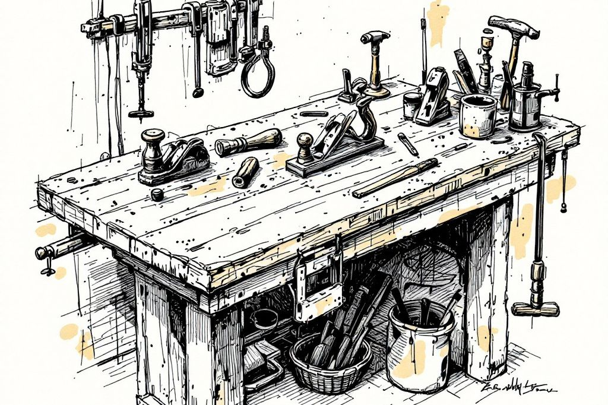

工務店・職人・不動産・解体・運送の皆さまへ
職人の仕事・時間・信用を守る。
町の信頼で、次の仕事と次の担い手をつなぐ。
暮らしの困りごと編集室 Local Edit が、協力してくださる業者さんに差し出したいのは、案件の量でも、手数料の安さでもありません。仕事のやり方と時間と信用を大事にされ、年を重ねても町で必要とされ続けること。それを、信頼の入口と、相談を仕事に整える編集で支えます。
そして、お渡しした先のお客さんを、取りに行きません。家と道具、ひとの暮らしを再生する小さな拠点。その仕事は、地域の職人さんの腕なしには成り立ちません。
職人の腕と、手放された家や道具。
その点と点をつなぎ、町の仕事という線に編む。
対象地域：逗子・葉山・鎌倉 ／ ご紹介の条件：事前にご説明 ／ 受ける仕事は、職人さんが決める

組むと得なところ／重なるところ／取りに行かないところ
ライバルではなく、一緒にやると得な相手に。
Local Edit も、入口の小さな仕事は自分で受けます。だから、どこが重なり、どこから先は取らないのかを、先にお伝えします。
仕事になる前に、整えます
- あいまいな相談を、予算・決める人・払う人・範囲まで整えてから渡します（無駄足が減ります）
- 電話・見積の説明・書類のめんどうを先に引き受けます
- 職人さんの名前と得意を、盛らずに町へ伝えます（人間図鑑）
- 紹介の条件（手数料を含む）は、お仕事をお願いする前に、書面でご説明します
入口の小さな作業は自分で
- 電球の交換・家具の移動・草むしり・手すりなど、ごく小さな作業は Local Edit 自身も受けます
- 草むしりは植木屋さん、手すりは工務店さん、家具の移動は運送・引越し業者さんと近い仕事です
- 片づけは、廃棄物・解体・清掃・古道具の仕事と近いところにあります
腕のいる仕事は、あなたへ
- 専門の技術や資格が要る仕事
- 一日がかりの規模の仕事
- 職人さんの馴染みのお客さん（本人とお客さんの同意がない限り、引き継ぎません）
- 職人さんの値段（地域の共通単価は、決めません）
「職人さんより安い」「職人さんより早い」とは言いません。Local Edit は、職人さんの代わりではなく、職人さんにつなぐ入口です。入口で出会ったお客さんは、あなたに渡します。
十の約束
業者さんへの、三つの層の約束。
上ほど深い価値です。A が「この会社と続けたい理由」、B が「現場に入りやすい理由」、C が「毎日の手間が減る理由」。
仕事を、人の暮らしとして守る
- 仕事のやり方・時間・体力を尊重する。できる作業・時間帯・地域・距離・重さを本人と記録し、案件ごとに断れます。
- 年を重ねても、町に居場所がある。現場の見立て・技術相談・若手への同行など、体の負担が軽い役割をつくります。
- 長年の信用を、次代へつなぐ。本人とお客さんの同意のうえで、後継の職人さんを紹介し、初回は同行します。
「ここなら安心」を先につくる
- 「Local Edit が確認した協力業者」として迎えられる。身元・資格の確認、お客さんへの事前説明、訪問予定の連絡、緊急窓口を整えます。
- 職人さんの名前と専門性を、正しく伝える。得意工事・仕事の姿勢・対応範囲を、誇張せずに紹介します。
毎日の手間を、軽くする
- 決まっていない相談を、仕事にしてから渡す。目的・写真・現場条件・予算感・決める人・払う人・時期を、案件カードに。
- 家族の合意と説明を、先にすませる。
- 電話・見積の説明・書類を軽くする。
- 値切り合戦を避け、支払い条件を見える化する。価格と受注は職人さんが決めます。
- 断っても関係は続き、空いた日も生かせる。
こんなこと、ありませんか
腕には自信がある。でも、仕事の周りが重い。
現場の仕事そのものより、そのまわりの仕事に、時間と気力を取られていませんか。私たちは、そこを引き受けたいと考えています。
| こんなこと、ありませんか | Local Edit が引き受けること |
|---|---|
| 現場から帰ると、電話の折り返し、見積の説明、請求書、家族への連絡が待っている。 | 電話の受け答え・見積の説明・日程調整・書類・請求の手伝いを、先に引き受けます。あなたには、現場に集中してもらいます。 |
| 頼まれても、手が回らず、断らざるをえなかった。それが続くと、お客さんも離れていく。 | 条件の合う仕事だけを、○△×でお声がけします。断ってかまいません。理由も聞きません。断ったあとの関係も、変わりません。 |
| 行ってみたら、話が決まっていなかった。決める人も、払う人も、はっきりしない。 | 決める人・払う人・予算・範囲を、整えてから渡します。無駄足と、嫌な連絡を減らします。 |
| この先、長年のお客さんを、だれが引き継いでくれるのか。 | お客さんの同意のうえで、次の担い手へ信用をつなぎます。初回は同行して、顔合わせまで。 |
| パソコンやアプリは、正直、得意じゃない。 | 電話・LINE・紙1枚で回します。新しい道具を覚える必要はありません。 |
相談を、仕事にしてから渡す
職人さんに渡すのは、整った案件だけ。
相談を A／B／C に分け、準備のできた A だけを、紙1枚の案件カードでお渡しします。
職人さんへ打診
目的・権限・作業範囲・場所・時期・払う人・予算感がおおむね明確。案件カードをお渡しし、現地確認・正式見積へ。
Local Edit が整える
家族の意見・所有や権限・予算・範囲がまだ決まっていない相談。こちらで追加に聞き取り、決めるのを手伝います。
職人さんには回さない
構想だけの段階。相談対応か、有償の調査へ。無駄足を、増やしません。
- 依頼の背景・目的
- ＿＿＿
- 希望する結果
- ＿＿＿
- 写真・数量
- ＿＿＿
- 作業対象／対象外
- ＿＿＿
- 施工上の制約・搬出経路
- ＿＿＿
- 決める人（発注権限）
- ＿＿＿
- 払う人・支払期限
- ＿＿＿
- 予算感・希望日程
- ＿＿＿
- 家族の未決事項
- ＿＿＿
- 要資格・許認可
- ＿＿＿
- 職人さんの回答
- ○ 可／△ 条件付き／× 不可
- 追加工事の承認方法
- ＿＿＿
返事は「○（対応可）・△（条件次第）・×（今回は難しい）」だけで十分です。断る理由は聞きません。無理な調整は、しません。
業種ごとの地図（案）
それぞれの業種と、どう組むか。
私たちの見立てです。実際の現場の声はまだ入っていません。最初のお話のなかで「ここは重なりますか」とおたずねして、直します。
| 業種 | 一緒にやること（業者さんの得） | すみわけ |
|---|---|---|
| 電気工事 | 資格が要る仕事だけが届きます。電話の受け答えは Local Edit が。 | 電球の交換は Local Edit。配線・器具の取り付けは電気屋さん。 |
| 水道・設備 | 修理の相談が、写真と状況つきで届きます。 | 修理・交換は、すべてお願いします。 |
| 塗装・内装 | 空き家の再生や退去後の仕事の入口になります。 | すべてお願いします。 |
| 運送・引越し | 古道具・家具の運搬を、継続してお願いします。 | 家具の移動は、部屋のなかの短い距離だけ自分で。運搬は運送屋さん。 |
| 植木・造園 | 庭木の剪定・伐採・年間の手入れが、整理されて届きます。 | 草むしりは小さな範囲だけ自分で。剪定・伐採・年間管理・広い庭は植木屋さん。 |
| 工務店・大工 | バリアフリー・修繕・空き家の再生の相談が届きます。 | 手すりなどの小さな取り付けは、最初の数件は工務店さんに確認してもらいます。工事の範囲は工務店さん。 |
| 解体 | 解体の前に、家財・古材を引き取るので、片づけの手間が減ります。 | 解体工事は解体業者さん。Local Edit は解体前の家財整理と、古材の引き取り。 |
| ハウスクリーニング | 退去後・片づけ後の清掃が届きます。 | 清掃はお願いします。Local Edit は片づけと仕分け。 |
| 不動産 | 空き家の管理・賃貸・売却の相談が、家財整理つきで届きます。 | 売買・賃貸の仲介は不動産会社さん。 |
| 廃棄物収集 | 片づけの現場で出る処分が、まとまって届きます。 | 処分は許可のある業者さんにお願いします。 |
| 古道具・古材店 | 売れ残りの出口、救った家具・古材の売り先が増えます。目利きを学ぶ場にもなります。 | 同じものを、同じお客さんに売り合いません。 |
| 司法書士・行政書士 | 相続・実家じまいの相談が届きます。 | 法律の相談は専門家へ。紹介の条件は、事前にご説明します。 |
会う前から、安心できる理由を
「確認した範囲」を、はっきり見せます。
ロゴやバッジだけでは、信用は生まれません。何を確認したかを書き、訪問の前にお客さんへお伝えします。
| 確認すること | 最小限の運び方 |
|---|---|
| 本人・事業の実態 | 面談。氏名・屋号・連絡先・経験 |
| 資格・許認可 | 工事内容に応じて確認し、期限を管理 |
| 保険・事故対応 | 賠償責任保険などの加入を確認。補償範囲は個別に説明 |
| 技術・実績 | 施工例・紹介者・得意／不得意 |
| お客さんへの対応 | 挨拶・作業前の説明・養生・清掃・報告 |
| 苦情・改善 | 窓口を置き、案件のあとに確認・記録 |
訪問前の4点セット
職人の生涯を守る
高齢の職人さんに、仕事を押しつけません。
- 参加のときに「できる／できない／条件つき」の作業表を、本人といっしょにつくります（脚立・屋根・高所・重量物・遠距離・時間外）。年齢だけで制限しません。
- 紹介は、毎回の打診です。断る理由は聞きません。断っても、紹介の頻度は下げません。
- 施工のほかにも役割があります。見立て、古材の価値判断、修繕計画、若手への助言、現調への同席。
- 移動・相談・同行の時間にも、対価をつけます。善意の無料相談を、当たり前にしません。
- 本人に、引き継ぎたいか、どこまでかを聞く
- お客さんから、次の担当に情報を渡す同意をもらう
- 経緯・家の注意点・してはいけないこと・約束を整理する
- 本人の推薦・適性・お客さんの希望で、次の担当を選ぶ
- 必要なら、初回に同行して顔合わせ
- 移ったあと、双方に確認する
お客さんは、職人さんの「持ち物」ではありません。直接の取引を禁じたり、紹介先を縛ったりもしません。
すること／しないこと
「しないこと」まで、約束します。
| 約束 | Local Edit がすること | しないこと |
|---|---|---|
| 仕事のやり方と時間を守る | 対応地域・曜日・得意工事・NG作業・体の負担を記録し、毎回本人に確認 | 強制の割り当て、断ったことへの罰、値段の一方的な引き下げ |
| 信用を次代へつなぐ | 軽い技術相談・後継の同行・同意つきの馴染み客の引き継ぎ | 顧客名簿を勝手に移す、引退後の収入を保証する |
| 信頼を先につくる | 選定の基準・紹介の通知・当日の照合・苦情窓口をそろえる | 「絶対安全」「全工事保証」と言う |
| 無駄足を減らす | 写真・作業範囲・払う人・予算・訪問条件を整理 | 技術判断や最終見積を、職人の代わりに約束する |
| 家族の未決事項を整理 | 所有者・発注者・払う人・主な意向を、案件ごとに確認 | 法的な権限が分からないまま着工する |
| 嫌な連絡と値切りを減らす | 変更連絡の一次窓口、見積の説明、予算が足りなければ範囲を調整 | 際限のない事務代行、追加工事をタダでやらせる |
| 断っても関係が続く | ○／△／×で返事をもらい、断られたら次の人へ | 受注ノルマ、案件の保証 |
お約束できないこと
| 言わないこと | かわりに、こう言います |
|---|---|
| 入金100%保証・未払いゼロ | 払う人・期限・追加工事の承認をはっきりさせ、請求を手伝います |
| 書類ゼロ | 書類や連絡の負担を軽くします |
| 絶対安全な業者 | 身元・経験・保険・対応ルールを確認した協力業者です（確認した範囲を明記） |
| 必ず仕事を出す・引退後も収入を保証 | 役割を一緒に探し、条件が合えば有償でお願いします |
| 地域共通の単価 | 見積は一人ひとり。条件の透明化を優先します |
| 引退後の顧客を当社へ自動で引き継ぐ | 本人とお客さまの同意があるときだけ、次の担い手をご紹介します |
三方良し
お客さんも、業者さんも、私たちも。
| だれ | 受け取る価値 | 守る線 |
|---|---|---|
| お客さん 主は高齢のご本人 | 依頼が整理され、信頼できる人にたどり着ける。空き家や実家の相談も、窓口が途切れない。 | 価格と責任分担を透明に。選ぶ自由。「安全保証」を言いすぎない。 |
| 協力業者 | 営業・連絡・交渉が減り、自分のペースを守れる。信用と馴染み客が大事にされる。 | 断る自由、適正な対価、名前と技術への敬意。手数料の条件は、事前に明示。 |
| Local Edit | 相談整理・調整・住まいの管理・再生販売といった実働に、お客さんから対価をいただく。 | 手数料は、事前にご説明のうえ、合意した条件でいただく。許認可・契約・品質は、各事業者が責任を持つ。 |
はじめ方
小さく試して、職人さんの言葉で確かめます。
私たちからの言葉
この街の職人さんへ。
- 仕事の量より、仕事の質と、あなたの時間を。
- 町で積み上げた信用を、次の町の仕事へ。
- お客さんの安心は Local Edit が先につくる。職人は腕を発揮する。
「実の商人は、先も立ち、我も立つことを思うなり。」――石田梅岩。職人さんを使い捨てず、できない約束を口にせず、確かめたことだけを誇る。それが、町で長く信用される近道だと考えています。